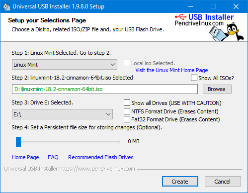
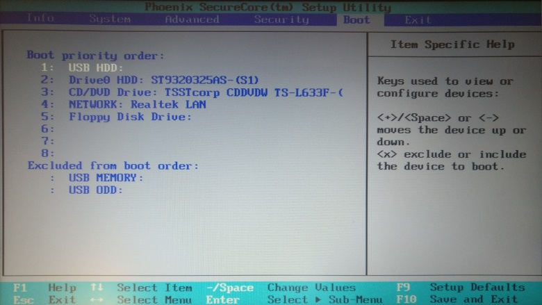
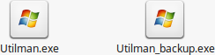
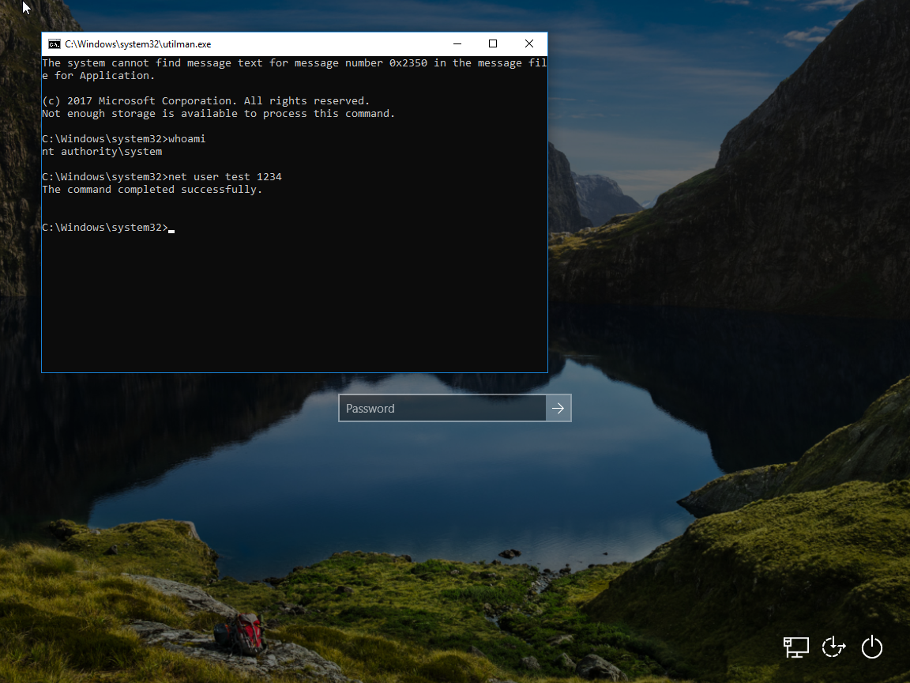
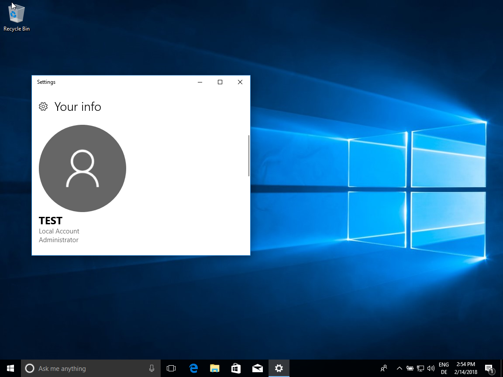

In this tutorial you will learn how to reset the password of an account in windows and how to get access to everything on the computer without a password or write protection.
This works on Windows XP, Vista, 7, 8, 8.1 and 10.
Attention! In Windows 10 you can only reset the password if it is a local account but you can access the data without password!
First we make a bootable USB stick
For this go to linuxmint.com and download Linux Mint
Then download the Universal USB Installer from here
Now open the Universal USB Installer and install Linux Mint on a USB stick.

After that go to the PC where you want to access the data and turn it on
After you pressed the power button spam the F2 key until you get into the BIOS
Here go to "Boot" and move the entry "USB HDD" to the top like it is shown below

Now plug in your USB and reboot your PC
Your PC boots now in Linux Mint without write protection
Now you can access and edit every file
To reset the password follow the steps below
First navigate to Volume/Windows/System32 and rename Utilman.exe to Utilman_backup.exe
Then replace copy cmd.exe and rename the copy to Utilman.exe

Restart your PC and press the "Ease of access" button
Now you have a command promt in which you enter "net user <name of the user> <new password>"
The old password is not required

Now you can log in with the new password
